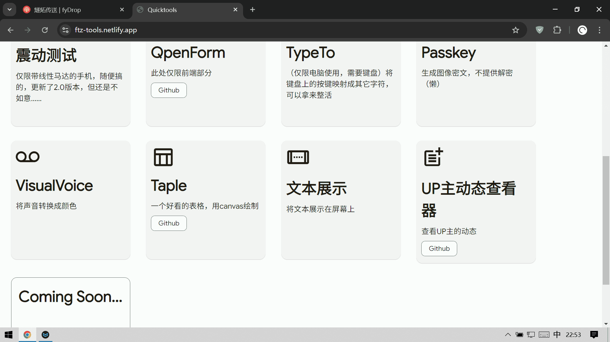
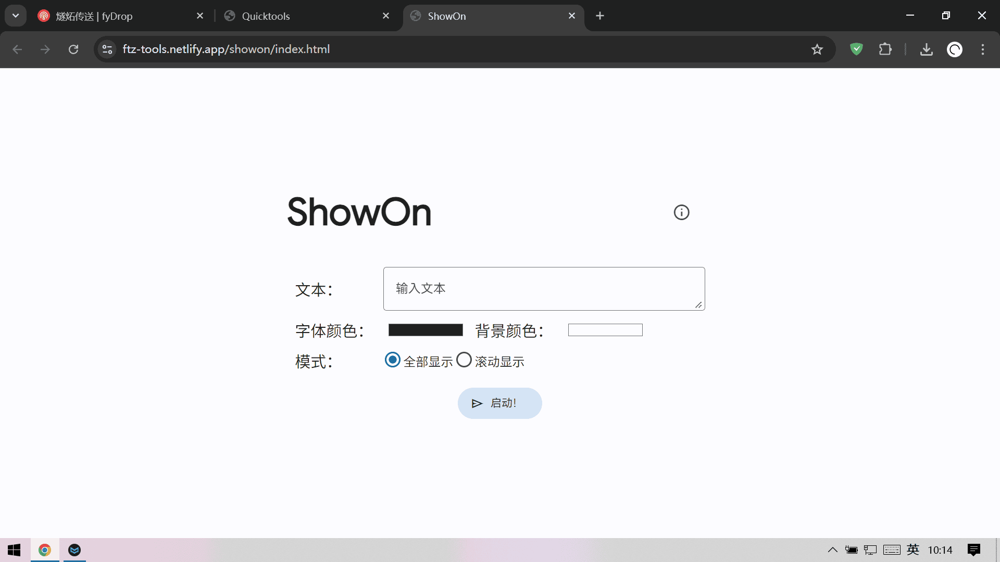
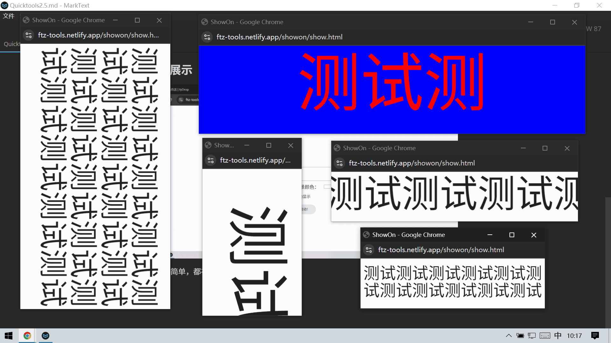
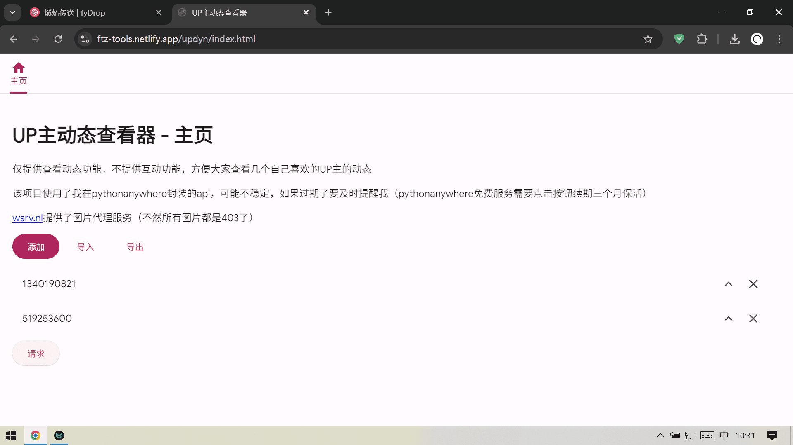

Quicktools第2.5弹：文本展示工具、UP主动态查看器
又来了又来了，我目前唯一一个会长期更新下去的项目
照样，先贴出链接 GithubGithubPagesNetlify

一共两个新工具（相较于上一弹）
文本展示

功能很简单，都在图片里面了
启动之后带文本的窗口在新窗口打开

当页面比例小于1:1的时候画面会竖过来
滚动模式会把所有内容放在一行滚动展示
自动调节字体大小，是的文本能够以尽量大的字体铺满屏幕
动态查看器
单独开了一个Github
这个才是重点！
想要在学校上电脑课的时候看一些喜欢的up主的动态
但是那电脑太jb卡了，32位win7，b站网页要加载半天
要不就做一个对电脑轻松一点的第三方网页吧
功能

添加 -> 添加一个用户的uid
导入 -> 通过json或返回位json的url导入
导出 -> 复制json
uid右边的两个按钮：涌动位置到最上面、一处这个uid
请求 -> 顾名思义
纯文本懒得展示，接下来展示转发、图片、视频三种动态
转发动态和图片动态如图，右上角的是打开动态的二原链接
通过套娃的方式展示被转发动态，支持所有这里支持的动态
图片使用viewer.js查看
多张图片的话会在放图片的哪个区域横向排列，viewer.js也是可以在同一个动态内的多个图片切换的
视频长这样，左边一个封面，鼠标悬浮可以查看简介，右边是标题和链接
如果遇到了不支持的动态类型就会这样
怎么样？是不是很简单很好用（）
开发经历
写这个东西最大的困难在于调用api和获取图片
B站这波反爬虫做的好啊
首先是CORS，让一个纯浏览器黄健的JS项目无法直接请求
用反代试试？死了几个网站，都是状态码-352错误，找了一下，需要一个很复杂的签名验证
怎么搞呢？左后我用Qwen-2.5-Max喂了一下Bilibili-API-Collect里面相关的文档，生成了一个Python程序，成功地获取到了数据，结合一下放到我的pythonanywhere里面就能够正常调用了
不过这个API的成绩结构有点复杂
而且还存在opus动态，类似于文章的形式，有的动态标着是文本或者图文动态，实际上还要我判断一下是不是opus，它获取文本的内容和获取图片链接的节点不一样
然后就是图片了，又是CORS，找了很久终于找到了一个还不错的：wsrv.nl